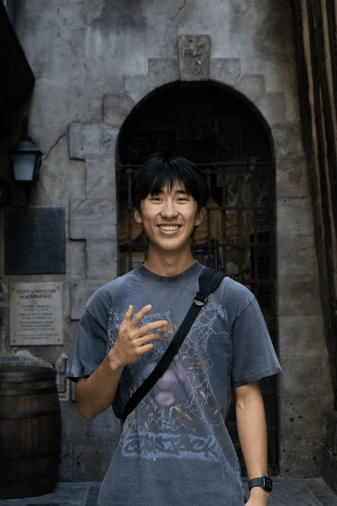
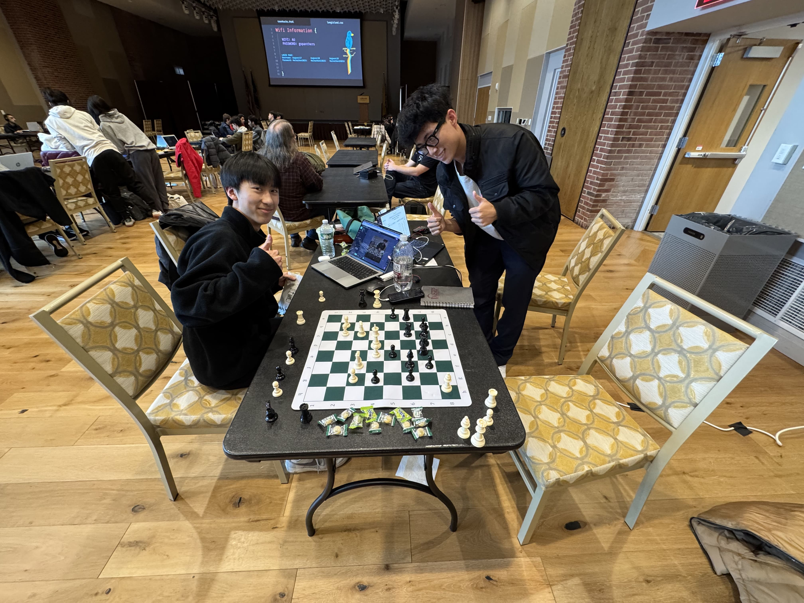
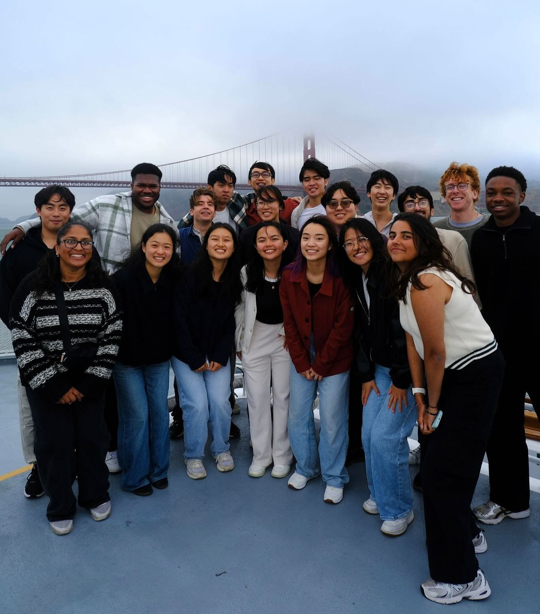
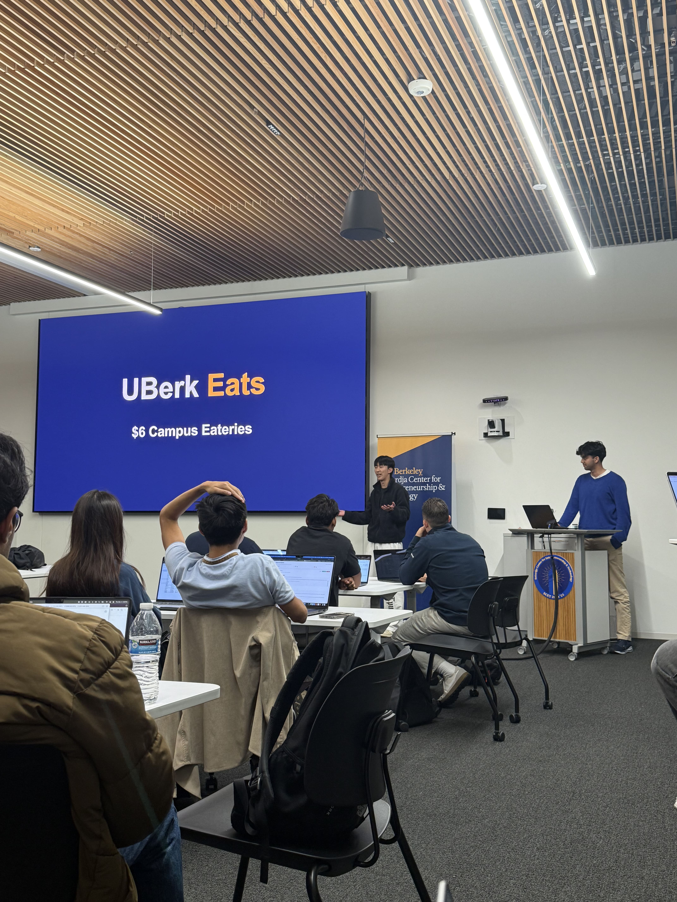
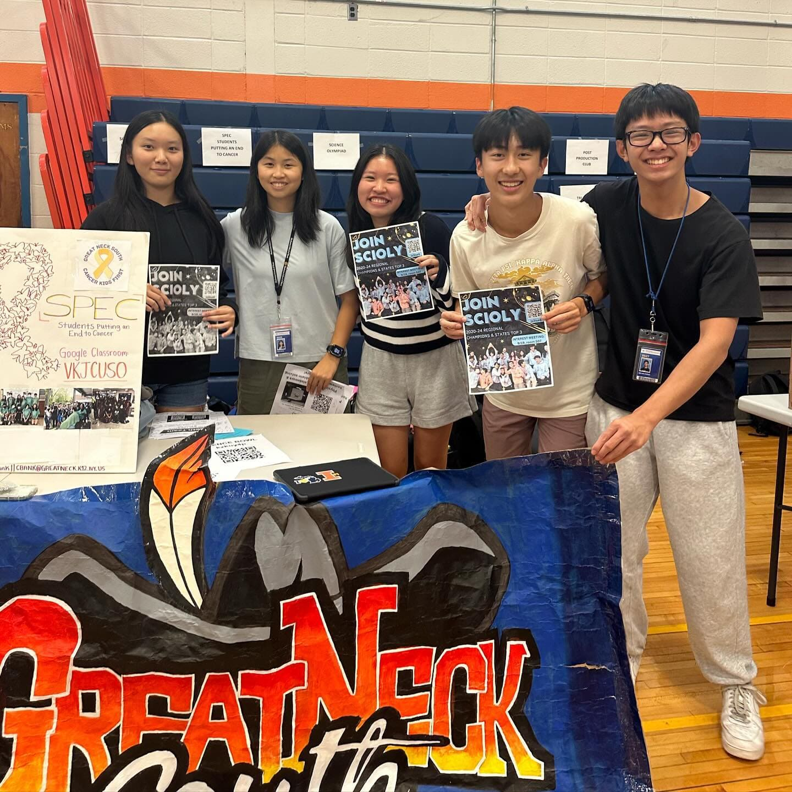

Caden Li

Hi, my name is Caden. I'm a freshman studying Computer Science at UC Berkeley. I'm interested in exploring entrepreneurship tech stuff, but I think it's kind of early to determine what I'm gonna do.
GAMBIT FOR GROWTH
I grew up in a very STEM-oriented environment. The entirety of high school was to do things to get into college. But what do you do after you get into college? It's a difficult question.
So Eddy and I tried doing these projects to see what sticks, what doesn't, post it online, and see how people react to it. We started doing that in January and through the next couple of months we were through our first project: AI Chess glasses.
Alexandra Botez tried our chess glasses. She was in Germany then, so we had to wake up at 4 AM to help her set it up on zoom after sleeping at 12 AM. [Laughs] Talking to her gave me reassurance that I’m going in the right direction.
In those 3 months we got really lucky. That virality online gave me a lot of opportunities to connect with different people that I look up to. It was the first time where college apps wasn't influencing my decisions. You feel liberated to do something that nobody else forced you to do.
So Eddy and I tried doing these projects to see what sticks, what doesn't, post it online, and see how people react to it. We started doing that in January and through the next couple of months we were through our first project: AI Chess glasses.

Caden and Eddy @ Teenhacks Hackathon working on AI chess glasses
In those 3 months we got really lucky. That virality online gave me a lot of opportunities to connect with different people that I look up to. It was the first time where college apps wasn't influencing my decisions. You feel liberated to do something that nobody else forced you to do.
THE J.A.R.V.I.S. OF NOTION
Earlier that year, I was fortunate to get an internship at a company called Notion because the CEO of Notion saw one of my projects. I lived in San Francisco by myself - my landlord was someone at Notion [Laughs].
For the first two weeks, I couldn't find any housing, so I lived at Cluely. I knew Roy from this Columbia hackathon, which Eddy and I actually won. He invited us to his own hackathon upstate, and we got closer to him. The people at Cluely are pretty young so you could say slang and brain rot references and they'd get it, which was something I realized was not the case at Notion - the age range is slightly larger [Laughs].
When people think of an AI, you'd think you'd want a J.A.R.V.I.S., right? It's something that people want to reach for. When you talk to ChatGPT, you send a message and wait a couple seconds. It's like a Google search that's tailored towards you. But you actually want AI to change its shape based on the current task.
There's this thing called Cursor at Notion where you can ask the AI to code something for you. Cursor is so special because it has context to your code. Like J.A.R.V.I.S., it knew everything about Iron Man's life. That's the same for Cursor where it knows your entire code base. It can give code changes that are tailored to you.
I think the tech community in general and me as well is very pro-development of AI. I'm not as concerned as AI taking over the world as I am about it replacing your own learning experience.
If you do vibe code it empowers people who don't know how to code, but the chances of learning how to code properly also decreases. It gets to the point where if you want to build something that's greater, you don't have the foundations to do that. While the path is already paved for you, it’s important to know the reason for why you're doing the things that you're doing.
For the first two weeks, I couldn't find any housing, so I lived at Cluely. I knew Roy from this Columbia hackathon, which Eddy and I actually won. He invited us to his own hackathon upstate, and we got closer to him. The people at Cluely are pretty young so you could say slang and brain rot references and they'd get it, which was something I realized was not the case at Notion - the age range is slightly larger [Laughs].
When people think of an AI, you'd think you'd want a J.A.R.V.I.S., right? It's something that people want to reach for. When you talk to ChatGPT, you send a message and wait a couple seconds. It's like a Google search that's tailored towards you. But you actually want AI to change its shape based on the current task.
There's this thing called Cursor at Notion where you can ask the AI to code something for you. Cursor is so special because it has context to your code. Like J.A.R.V.I.S., it knew everything about Iron Man's life. That's the same for Cursor where it knows your entire code base. It can give code changes that are tailored to you.

Caden and Notion Interns
If you do vibe code it empowers people who don't know how to code, but the chances of learning how to code properly also decreases. It gets to the point where if you want to build something that's greater, you don't have the foundations to do that. While the path is already paved for you, it’s important to know the reason for why you're doing the things that you're doing.
UBERK EATS
I got to Berkeley in August and I realized there's a lot of free time. When you don't have a direction or specific purpose, it's very easy for you to dilly dally with your time. I joined this startup club called Launchpad, and by mid-October, I'm like "shit I don't have a startup."
Even if I don't know if it's the right direction, moving in some kind of direction gives you more information then not moving at all. I look around the parts of my life that are impacting me. I have the unlimited meal plan, which lets me get a meal every 30 minutes, but I only use it twice a day. There's this sophomore in my club that pays $17 to eat the same meal.
I realized there's this huge price difference in the Berkeley dining experience - a lot of the freshmen don't actually use all the meal swipes that we have. So we made Uberk Eats, a platform where freshmen can sell their meals to the upper classmen for a very cheap price.
We’ve been open for 15 days so far and had 70 freshmen users and around 400 people who bought meals through Uberk Eats. It's funny because when all is said and done, we're almost at $0 profit. But we actually just got an email from the Director of Dining, so Uberk Eats won't be living much longer. [Laughs]
Even if I don't know if it's the right direction, moving in some kind of direction gives you more information then not moving at all. I look around the parts of my life that are impacting me. I have the unlimited meal plan, which lets me get a meal every 30 minutes, but I only use it twice a day. There's this sophomore in my club that pays $17 to eat the same meal.
I realized there's this huge price difference in the Berkeley dining experience - a lot of the freshmen don't actually use all the meal swipes that we have. So we made Uberk Eats, a platform where freshmen can sell their meals to the upper classmen for a very cheap price.

Caden presenting Uberk Eats
IMPACT THE PEOPLE YOU CARE ABOUT
Something I regret in high school was not making sure my Science Olympiad club had a tighter community.
I cared a lot about that club. I think I didn't do enough to make sure that impact was a community-wise effect. There's a similar problem here at Berkeley, and at least in my club. Next year, I hope to have made my club a lot closer. I want to make sure everybody cares for each other a lot more so they're more passionate about the club identity.
It's nice to dream of impacting all the people in the world, but at the very minimum you should at least try to impact the people that you care about.
I cared a lot about that club. I think I didn't do enough to make sure that impact was a community-wise effect. There's a similar problem here at Berkeley, and at least in my club. Next year, I hope to have made my club a lot closer. I want to make sure everybody cares for each other a lot more so they're more passionate about the club identity.

Caden with Scioly Team @ GNSHS

DOOR
4
ARCHIVE
SUBJECT: CADEN LI
DATE: DEC 24, 2025
Caden and I were in the same middle school and we had a couple of shared classes as a member of Team Hero.
I've seen him go from talking about the techy state of the world in 7th grade to now building those said techy things.
It really does make me happy [and oddly sentimental] seeing my friends achieve their goals and chase their ambitions, especially those who I've known for a long time.
DATE: DEC 24, 2025
Caden and I were in the same middle school and we had a couple of shared classes as a member of Team Hero.
I've seen him go from talking about the techy state of the world in 7th grade to now building those said techy things.
It really does make me happy [and oddly sentimental] seeing my friends achieve their goals and chase their ambitions, especially those who I've known for a long time.
DON'T GO YET THERE'S MORE TO EXPLORE!